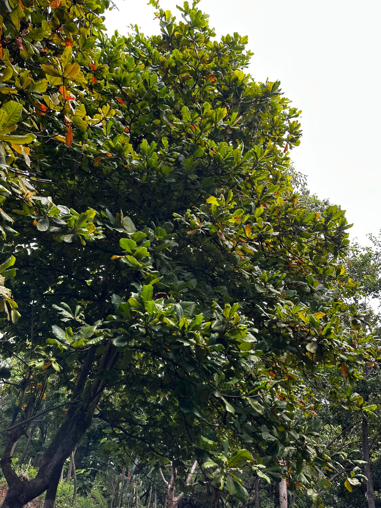

Almendro

Galería del Almendro📸 Galería del Almendro


Nombre científico
Byrsonima crassifolia.
Familia
Malpighiaceae.
Descripción
es un árbol que crece en climas cálidos y puede alcanzar gran altura. Su tronco es recto y sus ramas crecen en niveles, formando una copa amplia que proporciona sombra. Sus hojas son simples, grandes, de forma ovalada y alargada, con bordes lisos y textura ligeramente gruesa . Son de color verde cuando están jóvenes o maduras y pueden cambiar a tonos rojizos, amarillos o anaranjados antes de caer. Su fruto es ovalado y contiene una semilla en su interior.
Usos
El almendro tropical tiene principalmente usos ornamentales, alimenticios y tradicionales. Su fruto contiene una semilla que puede comerse cuando está correctamente preparada, aunque no debe confundirse con la almendra comercial (Prunus dulcis). El árbol también se utiliza para dar sombra en parques, jardines y patios. En algunas comunidades, sus hojas y corteza se emplean en la medicina tradicional para preparar remedios caseros, pero sus beneficios medicinales no están suficientemente comprobados científicamente.
📍 Lugar donde fue encontrada
Municipio de Huehuetan, Chiapas.